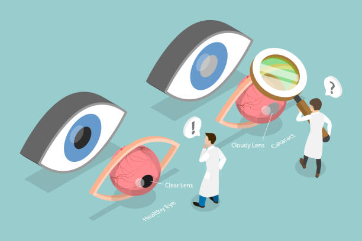
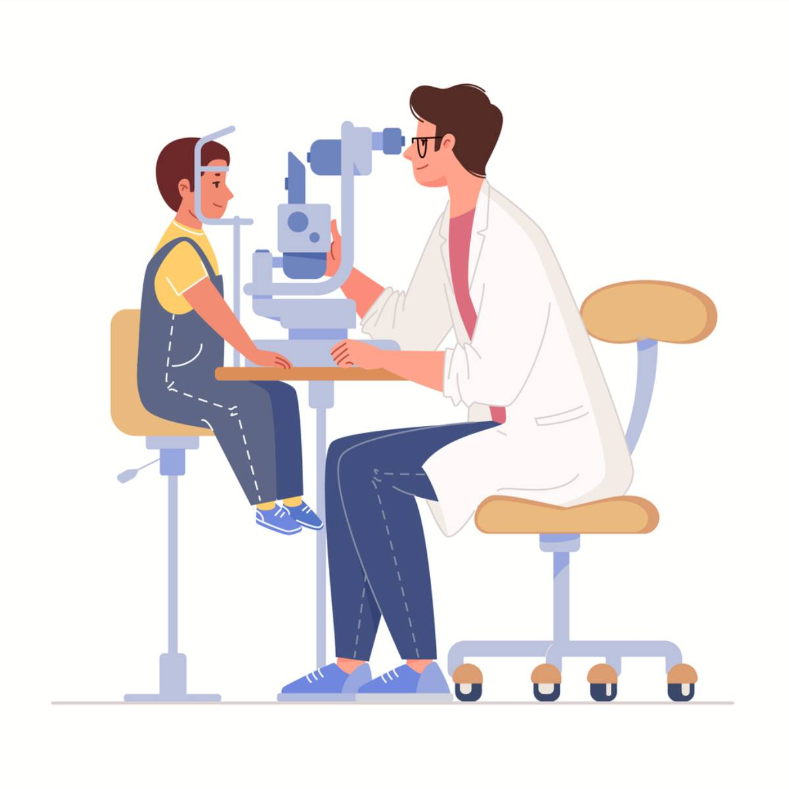

Ce este chirurgia oftalmologică asistată de robot?
Chirurgia oftalmologică asistată de robot utilizează tehnologia robotică pentru a ajuta chirurgii să efectueze proceduri delicate la nivelul ochilor. Această tehnologie de ultimă oră permite efectuarea intervențiilor chirurgicale cu un grad înalt de precizie, minimizând riscurile și timpul de recuperare.
Printre intervențiile chirurgicale oftalmologice asistate de robot se numără: tratamentele pentru cataractă, corectarea erorilor de refracție, tratamentele pentru afecțiuni de retină și corectarea diferitelor tulburări oculare.
De ce aș putea avea nevoie de o intervenție chirurgicală oftalmologică asistată de robot?
Chirurgia oftalmologică asistată de robot poate fi o opțiune eficientă pentru persoanele care au nevoie de corectarea vederii sau tratamente pentru afecțiuni grave ale ochilor. Prin utilizarea tehnologiei, intervențiile sunt mai precise, mai puțin invazive și implică un timp mai scurt de recuperare.
Este recomandată în cazurile următoare:
- Tratamentul cataractei
- Corectarea miopiei, hipermetropiei și astigmatismului
- Tratarea afecțiunilor retiniene
- Corectarea glaucomului

Care sunt riscurile operației oftalmologice asistate de robot?
Deși chirurgia oftalmologică asistată de robot este mai puțin riscantă decât metodele tradiționale, există încă unele riscuri asociate, cum ar fi:
- Infecții oculare
- Sângerare minoră
- Probleme temporare de vedere
- Complicații legate de anestezie
Ce se întâmplă în timpul operației oftalmologice asistate de robot?
În timpul operației oftalmologice asistate de robot, pacientul va primi anestezie locală pentru a elimina orice disconfort. Chirurgul va folosi un sistem robotic avansat, echipat cu brațe mecanice de mare precizie, pentru a efectua incizii microscopice și a manipula instrumentele chirurgicale. Camera de înaltă rezoluție a robotului oferă imagini detaliate ale ochiului, permițând o vizualizare clară a zonei de operat. Această tehnologie minimizează riscul de afectare a țesuturilor sănătoase și îmbunătățește precizia intervenției. La final, inciziile sunt atât de mici încât, de obicei, nu necesită sutură, ceea ce accelerează vindecarea.